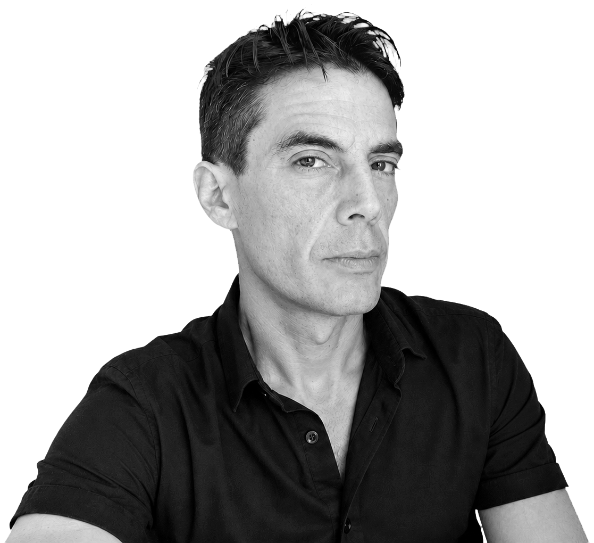
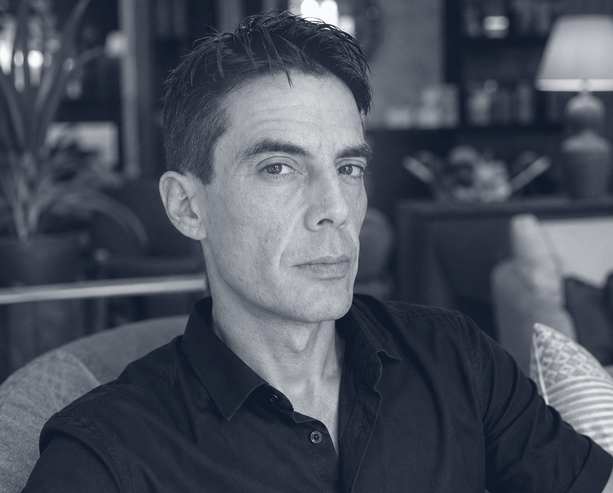
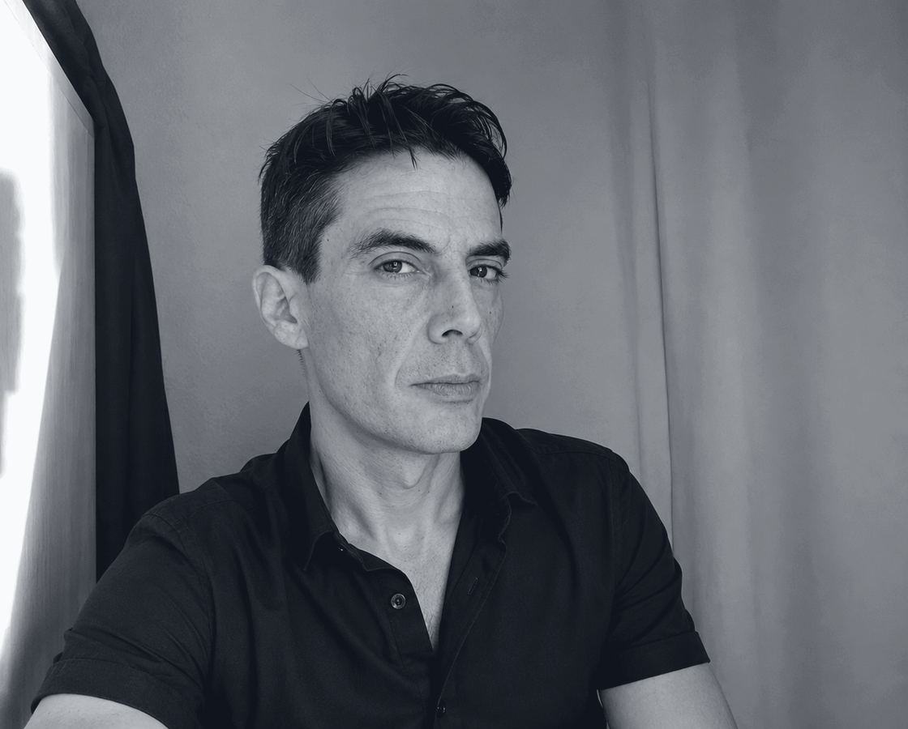

Integracion y educacion social
Apoyo en contextos donde importan el bienestar, la inclusion, la escucha activa y el desarrollo de personas.
Integracion social + diseno + experiencia
Conecto personas, aprendizaje y comunicacion visual para crear experiencias mas claras, humanas y utiles.

Soy estudiante de Integracion y Educacion Social, comprometido con el bienestar y el desarrollo integral de las personas. Mi recorrido combina una base solida en diseno grafico y produccion, experiencia como formador, atencion postventa y anos dinamizando clases y baile social.
Esa mezcla me permite mirar los proyectos desde tres capas: claridad visual, cuidado en la relacion y capacidad para ordenar procesos reales con equipos, clientes o grupos.


Apoyo en contextos donde importan el bienestar, la inclusion, la escucha activa y el desarrollo de personas.
Experiencia en tratamiento de informacion, produccion grafica y diseno para convertir ideas en piezas claras y consistentes.
Diseno de dinamicas, soporte postventa y acompanamiento de equipos o usuarios con lenguaje directo y solucionador.
Clases, baile social y gestion de grupos para activar participacion, confianza y presencia compartida.
Una lectura interactiva de los ejes profesionales de Carlos a partir de su experiencia.
Trayectoria solida en CTI Soluciones trabajando con tratamiento de informacion, produccion grafica y precision operativa.
Dinamizacion de clases y baile social en Barcelona, con gestion de grupos y foco en participacion.
Experiencia en atencion a empresas, tienda online, incidencias y soporte postventa con orientacion practica.
Formacion actual en Integracion y Educacion Social para sumar criterio comunitario, inclusion y acompanamiento.
Produccion grafica y operador de produccion. Tratamiento de informacion y produccion grafica.
Dinamizacion de clases, baile social y gestion de grupos en Barcelona y alrededores.
Emergia, DABA y servicios online/postventa con foco en resolucion, trato y empresas.
Tecnimarck, IKEA y Montaplus Hogar: diseno grafico, medicion, montaje y formacion en atencion al cliente.
Preimpresion, telemarketing, incidencias y produccion: base practica para entender clientes y procesos.
Informacion extraida del perfil facilitado, organizada para lectura rapida y buscable.
Barcelona, Cataluna, Espana.
Tratamiento de la informacion y produccion grafica.
Dinamizacion de clases y baile social. Gestion de grupos. Barcelona y alrededores.
Tienda online de Vodafone. Barcelona, Cataluna, Espana.
Atencion a empresas. Sant Cugat del Valles, Cataluna, Espana.
Montaje y medicion de cocinas IKEA. Barcelona, Cataluna, Espana.
Agente postventa. Formador en atencion al cliente. Hospitalet de Llobregat.
Experiencia profesional en diseno grafico.
Barcelona, Cataluna, Espana.
Experiencia operativa en produccion.
Barcelona, Cataluna, Espana.
Esplugues de Llobregat, Cataluna, Espana.
Grado en Educacion Social, 2024.
Ciclo Formativo de Grado Superior en Integracion Social, 2023.
CFGS en Diseno Grafico, 2003 - 2005. Bachillerato de Humanidades, 1996 - 2000.
La claridad visual puede reducir ansiedad, mejorar autonomia y hacer que una experiencia sea mas justa.
Un buen formador convierte procesos complejos en pasos comprensibles, practicables y humanos.
La dinamizacion corporal ayuda a desbloquear participacion, confianza y energia compartida.
Un modulo demostrativo para que la futura web pueda evolucionar hacia un asistente conectado a CV, proyectos y disponibilidad.
Asistente: Elige una pregunta o escribe una palabra clave.
Disponible en Barcelona para proyectos de integracion social, educacion, formacion, comunicacion visual y dinamizacion.